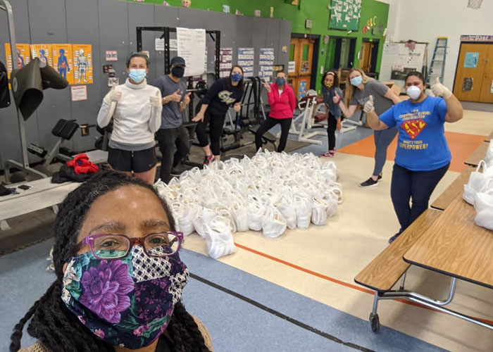
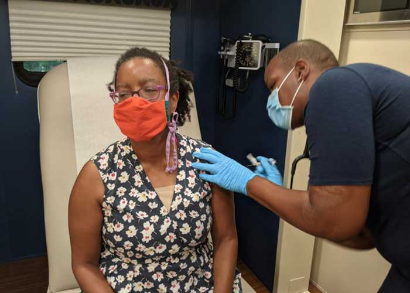
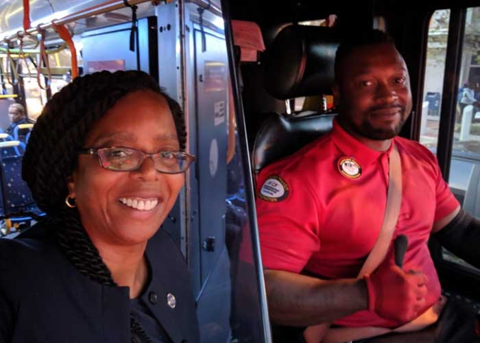
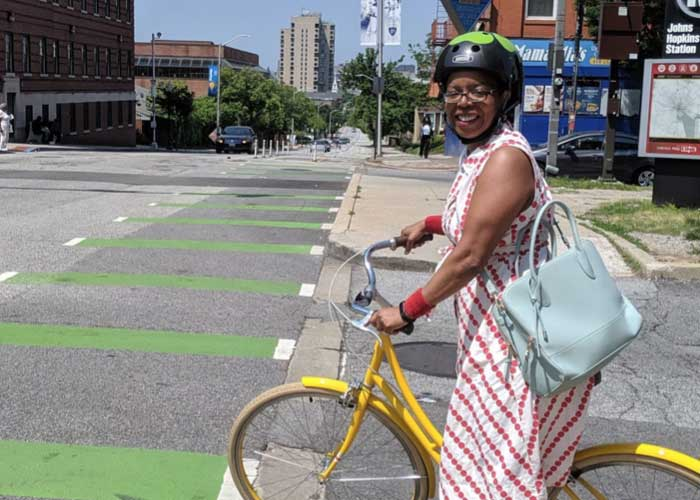
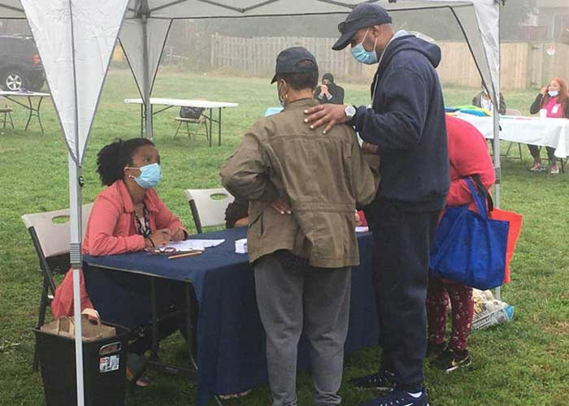

Long before taking office, Robbyn worked all over the world to protect public health, improve human well-being and build healthy communities. When she was elected to serve our community in 2018, she pledged to prioritize these same goals, right here at home.
Robbyn serves on the Health & Government Operations Committee in the House of Delegates and is a member of the Maryland Legislative Black Caucus, Maryland Women’s Legislative Caucus, and Maryland Legislative Latino Caucus. She is also a founding member of the Maryland Transit Caucus.
PRIORITY:
COVID-19 Response

We must continue to address public health during the pandemic.
During COVID, Robbyn:
- publicized the importance of getting tested for the virus, posting her own experience at a nearby walk-up testing site.
- masked up and volunteered regularly to pack and distribute food to families in need.
- handled hundreds of requests for unemployment insurance assistance.
- organized canvasses and knocked doors to make sure that marginalized residents completed the Censu and helped increase the Census response rate in our district.

To address the sense of abandonment expressed by constituents in the Brooklyn neighborhood, Robbyn saw the need for extra attention to neglected communities and organized two resource fairs in Brooklyn and Curtis Bay during the height of the fall COVID surge.
During the 2021 legislative session, Robbyn voted to pass the $1.2 billion RELIEF ACT, which gave direct aid to families, unemployed workers and small businesses suffering during the COVID-19 pandemic.
In addition, Robbyn voted to extend the Earned Income Tax Credit (EITC) to all Maryland taxpayers, including the 86,000 hardworking Marylanders who hold individual taxpayer identification numbers (ITIN), many of whom live in the 46th district.
PRIORITY:
Public Transit & Bicycling

Transportation is key to accessing education, employment, health care and economic opportunity.
However, our transportation system — the network of roads, rail, bridges and public transit — is unhealthy, underfunded, inadequate and unjust. Robbyn works hard to change this at both the policy level as well as in her own personal choices.
Robbyn is the only member of the Maryland General Assembly who is car-free by choice. She walks, takes the bus, rides her bike or uses rideshare to get around. This is not easy in Baltimore, where public transit has been underfunded and neglected for a generation. But in a city where nearly 30% of residents depend entirely on public transit, Robbyn’s choice demonstrates her commitment to understanding and fixing the obstacles her constituents face every day.

As a delegate, Robbyn champions transit-focused legislation.
- Robbyn's Dedicated Bus Lane legislation of 2019 laid the groundwork for faster, more reliable service. She continues to press for more improvement.
- To address funding deficits, Robbyn introduced the Complete Streets Funding bill that will enable Baltimore city to build pedestrian- and bike-friendly infrastructure.
- To address racial disparities in vehicle crashes, Robbyn worked successfully to require the state to begin measuring and reporting on non-fatal crash injuries by race. Currently, Maryland is one of a handful of states that fails to account for the disparate impact of traffic violence on Black and Brown Americans.
PRIORITY:
Safe & Liveable Communities

We must reduce traffic violence and make our streets safer.
In response to residents' calls for help reducing traffic violence on the Fayette Street and Orleans Street corridor in east Baltimore, Robbyn established the Livable Streets Coalition, a network of residents and stakeholders whose mission is to improve pedestrian safety and accessibility by strengthening collaboration across racial, language, physical ability, economic and neighborhood boundaries.
Currently, the Coalition is working actively to train residents in Design Thinking skills, to center empathy in planning public projects. Next the group will design a pedestrian-safe, human centered, traffic calming project in the area about the William Paca Elementary Middle School in east Baltimore. Robbyn has developed this model of community, grassroots project planning as a model to build consensus and support for future initiatives for complete streets.
In addition to these efforts, Robbyn:
- voted to pass an historic package of police reform legislation in the 2021 session.
- helped to repeal the Law Enforcement Officers’ Bill of Rights (LEOBR), making Maryland the first state in the country to repeal this outdated and harmful policy.
- voted to enhance civilian–driven transparency in police misconduct, supports civilian complaints, and imposes swift and uniform penalties for police misconduct.
- voted to pass the Maryland Police Accountability Act of 2021. Among other policies, this legislation will return the Baltimore Police Department (BPD) to local control, if ratified by Baltimore City residents. Baltimore City is currently the only jurisdiction in Maryland that doesn’t have control over its own police department.
Robbyn also voted to successfully close the loophole on background checks for shotguns and rifles, making Maryland a state which requires background checks for all gun sales.